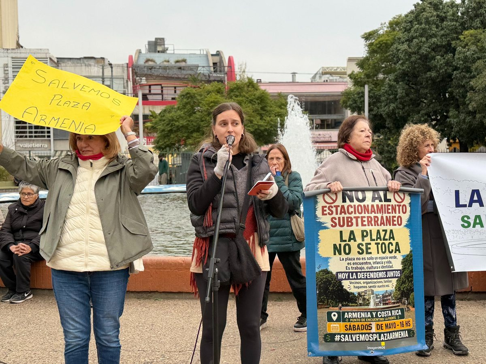
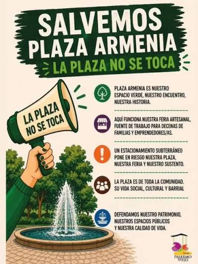

El histórico espacio verde de Palermo —punto de encuentro, trabajo y biodiversidad urbana— atraviesa un momento crítico y podría sufrir modificaciones que preocupan a la comunidad. El domingo 21 de junio, el equipo de Modo Feria se acercó a la Feria de la Plaza Armenia y, además de contar acerca de sus emprendimientos, los feriantes denunciaron una gran amenaza de cemento que se avecina: el gobierno porteño impulsa un plan para construir estacionamientos subterráneos en cinco espacios verdes de la ciudad, entre ellos, la Plaza Armenia.
"Los vecinos no quieren. Ya se hizo un amparo, pero no nos escuchan."
— Feriante de la Plaza ArmeniaImpacto vecinal y ambiental
El barrio es una zona céntrica y muy concurrida, por lo que la posibilidad de estacionar ya es baja. Sin embargo, las playas de estacionamiento no faltan y nunca tienen su capacidad completa. Asimismo, los oriundos y turistas disfrutan de sus calles caminando y consumiendo en los cafés y bares que rodean a la plaza. Una vecina comentó que el gobierno de la ciudad también propone abrir más locales gastronómicos, pero que no es una decisión sensata.
"El barrio ya está saturado."
— Vecina de PalermoPor otro lado, estas construcciones también implican destrucción. Los árboles añejos no resistirían el impacto de que sus raíces se corten. Varias fuentes coinciden en que la plaza es muy frecuentada y muchas zonas fueron delimitadas para crear espacios de juego para los infantes, pero ante esta amenaza de cemento, los juegos pierden su diversión.
"La plaza cerraría de dos a tres años y este es el único espacio verde que hay en la zona."
— Feriante de la Plaza ArmeniaLos feriantes y la resistencia
Y si la plaza cierra, ¿qué pasa con la feria? Los feriantes son los más afectados por la situación. Si la plaza cierra, la feria se iría con ella y muchos emprendedores perderían su principal fuente de ingreso.
"No somos informados de nada. No nos tienen en cuenta."
— Vendedora de velas y esencias aromáticas

Fuentes como La Nación y Todo Noticias explican que la Ley Hojarasca elimina las regulaciones y controles que antes limitaban concesiones y obras, desprotegiendo los bienes culturales, ambientales y comunitarios. Esta ley es la que respalda la destrucción de la Plaza Armenia para abrir el estacionamiento techado.
No obstante, los vecinos y feriantes no se quedan de brazos cruzados. Hace meses que promueven la iniciativa Salvemos Plaza Armenia, organizando marchas, caravanas y "abrazos a la plaza" todos los sábados a las cuatro de la tarde. Invitan a los transeúntes a acercarse a firmar para visibilizar el conflicto, frenar las obras y salvar a la plaza, casa de infancias, encuentros y memorias.
La Plaza Armenia no es simple cemento: es el espacio donde una comunidad creció entre juegos, feriantes y árboles. Los vecinos no toleran que destruyan el símbolo de mayor memoria para el barrio. No es sólo un pedazo de tierra, es la posibilidad de conectar lo urbano con el medio ambiente. Y quienes la defienden están lejos de dar el brazo a torcer.
📍 Abrazos a la plaza — todos los sábados a las 16 hs en Plaza Armenia (Palermo). Sumate a la iniciativa y firmá el petitorio.